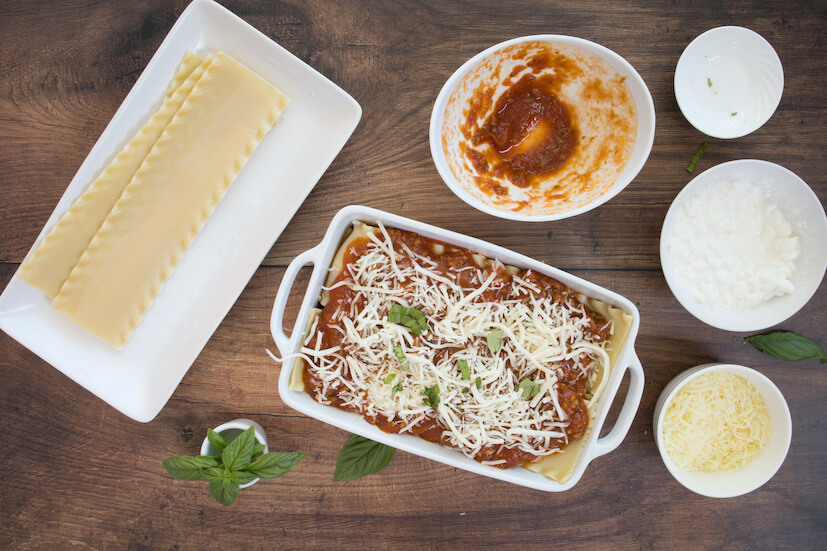

Recipe for Lasagna

Description
Bolognese lasagna is a staple of italian cuisine, cooked and loved all over the world!
Being the typical Sunday dish for every italian family, its simplicity and excellent taste
have immortalized it as one of the symbols of Italy.
Ingredients
- Lasagna sheets
- Tomato Sauce
- Mozzarella
- Freshly grated Parmigiano-Reggiano cheese
- One teaspoon of freshly ground black pepper
Steps
- Assemble the lasagna: spread a thin layer of sauce over the bottom of the pan, then add
a layer of lasagna sheet on top of the sauce; now add slices of fresh mozzarella and some
grated parmigiano reggiano; as a finishing touch, add a few sprinkles of ground pepper; repeat the layering
process until you fill the pan;
-
Bake the lasagna: Turn the oven to 180°C to preheat it while you assemble the lasagna;
Once the lasagna is assembled, cover the pan with a layer of aluminum foil; place the pan in the oven and
bake it for 30 minutes, then remove the foil to make the cheese on top crunchy; the dish is ready when the
internal temperature is at 75°C;
-
Cool and serve: remove the pan from the oven and let it cool for 15 minutes, then slice it up
and serve!